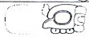
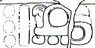
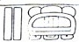

| A1 | Distance Number: 12 K'ins | |
| B1 |  | Distance Number continued: 3 Winals? |
| A2 | ??? | |
| B2 | Tzolk'in: 1 Ahaw | |
| C1 |  | Haab: 8 K'ayab |
| D1 |  | 10 K'atun |
| C2 | Tzolk'in: 7 Lamat | |
| D2 | Haab: 16 Xul? Mak? |
| E1 | ??-li? (could be hu-li "he arrived") | |
| F1 | ???? (maybe B'alah?) | |
| E2 | Chan K'awiil | |
| F2 | K'uhul Mutul Ahaw "Holy Lord of Mutul" |